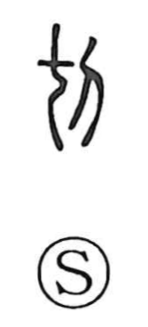

切

Uncategorized
Kun: kiru, kireru | On: setsu, sai
to cut ・ pressing ・ urgent ・ sharp ・ appropriate ・ to polish
Explanation
A compound graph that joins 七 and 刀. Here 七 is not the numeral but the pictograph of a severed bone, and with 刀, “knife,” the character evokes trimming and scraping bone or jade with a blade. The Book of Odes (Wei Feng, Qi’ao) pairs the knife and the file, and Mao’s commentary glosses 切 as treating bone—cutting and refining it—whence expressions like 切磋 “to polish and improve.” From the image of an edge coming right up against something, the word also developed senses of nearness and urgency—being pressing or imminent—and of keen precision and aptness, as seen in compounds such as 切迫, 緊切, 適切, and 切諫.